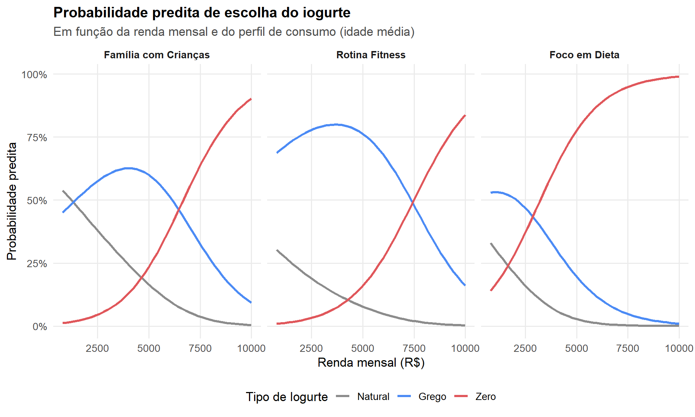

O que a escolha de seu iogurte tem a ver com Regressão Logística Multinomial?
r-code
alfabetização de dados
data literacy
regressão logística multinomial
nnet
gtsummary
estatística
Author
Jobenil Júnior
Published
July 28, 2026
Como prever, entre três ou mais opções, qual delas uma pessoa vai escolher?
Já conversamos por aqui sobre a regressão logística “tradicional” — aquela que responde perguntas de sim ou não, como “o cliente vai cancelar o serviço?” ou “o paciente vai se curar?”. Mas o mundo real raramente se resume a duas alternativas. As pessoas escolhem entre carro, ônibus ou bicicleta; entre planos de saúde Básico, Intermediário ou Completo; entre cores de carro. Recentemente um leitor me perguntou: “Prof. Jobenil, existe uma regressão logística para quando temos mais de duas categorias?” Existe sim, e ela se chama Regressão Logística Multinomial. Vamos entender juntos.
🛒 Pense em clientes escolhendo Iogurtes
Imagine a prateleira de iogurtes de um supermercado: lado a lado estão o Natural, o Grego e o Zero/Light. Um cliente para na frente da gôndola e, em poucos segundos, decide qual vai para o carrinho.
Se você observasse centenas de clientes ao longo de um mês, começaria a notar padrões: quem está com crianças no carrinho tende a levar o Natural (mais barato, embalagem maior); quem claramente segue uma rotina fitness vai direto no Grego (mais proteína); quem está de olho na dieta escolhe o Zero. Não é acaso — é o perfil de cada cliente (idade, renda, se está fazendo dieta, se tem filhos, etc.) empurrando a escolha para uma direção.
A Regressão Logística Multinomial é exatamente esse mapeamento: com base no perfil de cada cliente, ela estima a probabilidade de ele escolher cada um dos iogurtes disponíveis na prateleira — não um “sim ou não”, mas uma probabilidade para cada opção da gôndola.
A diferença para a regressão logística binária é simples e crucial:
Tipo de Modelo
Quantas opções?
Exemplo
Regressão Logística Binária
2 (sim/não)
O cliente vai cancelar a assinatura?
Regressão Logística Multinomial
3 ou mais, sem ordem natural
Qual iogurte o cliente vai levar: Natural, Grego ou Zero?
Regressão Logística Ordinal
3 ou mais, com ordem natural
Qual nota de satisfação: Ruim, Regular ou Ótimo?
Repare no detalhe: se as categorias tivessem uma ordem natural (ruim < regular < ótimo), o modelo certo seria o ordinal. Como carro, ônibus e bicicleta não têm uma “ordem” entre si — e nem Natural, Grego e Zero, do ponto de vista das combinações de atributos que levam à escolha —, usamos a versão multinomial.
🎯 A Categoria de Referência
Em regressão logística multinomial devemos sempre escolher uma categoria como ponto de partida, chamada de categoria de referência (ou baseline). Todas as demais categorias são interpretadas em comparação a ela.
Na prateleira de iogurtes, o modelo pode definir o Natural como referência — afinal, é o tipo mais tradicional e mais consumido. A partir daí, ele nos diz algo como: “Para cada ano a mais de idade do cliente, a chance de ele escolher o Grego em vez do Natural aumenta em X%.” O modelo nunca fala do Grego ou do Zero sozinhos — sempre em comparação à referência escolhida.
Essa comparação com uma categoria de base é o que torna os coeficientes do modelo interpretáveis, mesmo quando existem cinco, dez ou vinte categorias em disputa.
🥣 Qual Iogurte o Cliente Vai Colocar no Carrinho?
Vamos sair da teoria e simular uma situação real de varejo. Imagine uma rede de supermercados que, através do aplicativo de fidelidade, quer prever qual tipo de iogurte um cliente tem mais chance de comprar na próxima visita — para personalizar cupons de desconto e garantir que a prateleira certa esteja sempre abastecida. Três tipos disputam o carrinho:
Natural (categoria de referência)
Grego
Zero/Light
O time de marketing e a equipe de estoque querem prever, com base no perfil de cada cliente cadastrado no aplicativo, qual desses três tipos ele tem mais chance de levar.
🔍 As variáves são os Sinais que o cliente dá
O modelo não adivinha o futuro: ele aprende com pistas do comportamento e do perfil do cliente. Neste exemplo, vamos usar três sinais:
Variável
Descrição
idade
Idade do cliente, em anos
renda
Renda mensal estimada, em reais
perfil
Perfil de consumo: Família com Crianças, Rotina Fitness ou Foco em Dieta
💻 Simulação em R (com ajuda de IA)
Vamos simular uma base com 600 clientes fictícios do supermercado e ajustar o modelo com o pacote {nnet}, que traz a função multinom() — a forma mais direta de rodar uma regressão logística multinomial no R.
# 1. Carregando os pacotes necessárioslibrary(nnet)library(dplyr)library(tidyr)library(ggplot2)library(gtsummary)# 2. Definindo a semente para reprodutibilidadeset.seed(123)# 3. Simulando o perfil de 600 clientesn_clientes <-600idade <-round(runif(n_clientes, 18, 65))renda <-round(rnorm(n_clientes, mean =4500, sd =1800))renda[renda <800] <-800# renda mínima plausívelperfil <-sample(c("Família com Crianças", "Rotina Fitness", "Foco em Dieta"),size = n_clientes, replace =TRUE,prob =c(0.45, 0.30, 0.25))perfil <-factor(perfil, levels =c("Família com Crianças", "Rotina Fitness", "Foco em Dieta"))# 4. Definindo a propensão (log-odds) de escolher Grego e Zero,# sempre em relação à categoria de referência "Natural"eta_grego <--1.2+0.015* idade +0.00035* renda +ifelse(perfil =="Rotina Fitness", 1.3, 0) +ifelse(perfil =="Foco em Dieta", 0.3, 0)eta_zero <--4.5+0.010* idade +0.00090* renda +ifelse(perfil =="Foco em Dieta", 2.5, 0) +ifelse(perfil =="Rotina Fitness", 0.6, 0)# 5. Convertendo a propensão em probabilidades (fórmula do logit multinomial)denominador <-1+exp(eta_grego) +exp(eta_zero)p_natural <-1/ denominadorp_grego <-exp(eta_grego) / denominadorp_zero <-exp(eta_zero) / denominadorprobabilidades <-cbind(p_natural, p_grego, p_zero)# 6. Sorteando o iogurte escolhido por cada cliente, com base nas probabilidadesiogurte <-apply(probabilidades, 1, function(p) {sample(c("Natural", "Grego", "Zero"), size =1, prob = p)})df_iogurte <-data.frame( idade, renda, perfil,iogurte =factor(iogurte, levels =c("Natural", "Grego", "Zero")))# Conferindo a distribuição dos iogurtes escolhidostable(df_iogurte$iogurte)
Natural Grego Zero
90 318 192
Repare que a base foi construída para que a chance de levar o Zero cresça bastante com a renda e com o perfil de Foco em Dieta, e que o Grego seja puxado principalmente pela Rotina Fitness — exatamente o tipo de padrão que o time de marketing suspeita existir, mas precisa comprovar com dados.
📈 Ajustando o modelo
# 7. Ajustando a regressão logística multinomial# "Natural" já é a categoria de referência (primeiro nível do factor)modelo_iogurte <-multinom( iogurte ~ idade + renda + perfil,data = df_iogurte,trace =FALSE)summary(modelo_iogurte)
Call:
multinom(formula = iogurte ~ idade + renda + perfil, data = df_iogurte,
trace = FALSE)
Coefficients:
(Intercept) idade renda perfilRotina Fitness
Grego -1.161952 0.01712940 0.0003499607 0.9991963
Zero -5.182067 0.01384942 0.0009934536 0.3750249
perfilFoco em Dieta
Grego 0.6549127
Zero 2.9669890
Std. Errors:
(Intercept) idade renda perfilRotina Fitness
Grego 1.080776e-04 0.005795999 6.215401e-05 4.252219e-05
Zero 8.066346e-05 0.007681828 7.214469e-05 3.326176e-06
perfilFoco em Dieta
Grego 3.314672e-05
Zero 7.241131e-05
Residual Deviance: 921.355
AIC: 941.355
📑 Tabela de Odds Ratios com {gtsummary}
Ler a saída bruta do summary() é pouco amigável. O pacote {gtsummary} monta, em segundos, uma tabela pronta para publicação com os odds ratios (razões de chance) de cada variável, já separados por tipo de iogurte — sempre em comparação ao Natural:
# 8. Tabela de odds ratios (exponenciando os coeficientes)tbl_regression( modelo_iogurte,exponentiate =TRUE,label =list( idade ~"Idade (anos)", renda ~"Renda mensal (R$)", perfil ~"Perfil de consumo" )) %>%bold_p() %>%bold_labels()
Characteristic
OR
95% CI
p-value
Grego
Idade (anos)
1.02
1.01, 1.03
0.003
Renda mensal (R$)
1.00
1.00, 1.00
<0.001
Perfil de consumo
Família com Crianças
—
—
Rotina Fitness
2.72
2.72, 2.72
<0.001
Foco em Dieta
1.92
1.92, 1.93
<0.001
Zero
Idade (anos)
1.01
1.00, 1.03
0.071
Renda mensal (R$)
1.00
1.00, 1.00
<0.001
Perfil de consumo
Família com Crianças
—
—
Rotina Fitness
1.46
1.46, 1.46
<0.001
Foco em Dieta
19.4
19.4, 19.4
<0.001
Abbreviations: CI = Confidence Interval, OR = Odds Ratio
📊 Interpretação dos Coeficientes (Odds Ratios)
Cada coluna da tabela acima compara um tipo de iogurte ao Natural. Um odds ratio (OR):
Maior que 1 → a variável aumenta a chance de escolher aquele iogurte em vez do Natural.
Menor que 1 → a variável diminui essa chance.
Igual a 1 (intervalo de confiança cruzando o 1) → não há evidência de efeito.
Na prática, esperamos observar que o perfil de Foco em Dieta eleva fortemente as chances de o cliente escolher o Zero em vez do Natural, que a Rotina Fitness empurra a escolha para o Grego, e que a Renda também contribui para tipos mais caros — exatamente o comportamento que embutimos na simulação.
É esse tipo de leitura — “a cada mil reais a mais de renda, a chance de escolher o Zero em vez do Natural aumenta em X%” — que transforma coeficientes em decisão de negócio, seja para precificar, seja para posicionar produtos na prateleira.
🔮 Visualizando as Probabilidades Preditas
Coeficientes são úteis, mas um gráfico de probabilidades preditas conta a história de forma muito mais intuitiva. Vamos manter a idade fixa na média da base e variar a renda para cada perfil de consumo, observando como a probabilidade de cada tipo de iogurte se comporta:
# 9. Criando uma grade de cenários hipotéticos para prever probabilidadesgrade_predicao <-expand.grid(renda =seq(800, 10000, by =200),perfil =c("Família com Crianças", "Rotina Fitness", "Foco em Dieta"),idade =round(mean(df_iogurte$idade)))# 10. Prevendo as probabilidades de cada iogurte para cada cenárioprobs_preditas <-predict(modelo_iogurte, newdata = grade_predicao, type ="probs")grade_predicao <-cbind(grade_predicao, probs_preditas)# 11. Reorganizando os dados para o formato "longo", ideal para o ggplot2dados_grafico <- grade_predicao %>%pivot_longer(cols =c(Natural, Grego, Zero),names_to ="iogurte",values_to ="probabilidade" ) %>%mutate(iogurte =factor(iogurte, levels =c("Natural", "Grego", "Zero")),perfil =factor(perfil, levels =c("Família com Crianças", "Rotina Fitness", "Foco em Dieta")) )# 12. Gráfico de probabilidades preditas por renda, separado por perfil de consumoggplot(dados_grafico, aes(x = renda, y = probabilidade, color = iogurte)) +geom_line(linewidth =1.1) +facet_wrap(~perfil) +scale_y_continuous(labels = scales::percent_format()) +scale_color_manual(values =c("Natural"="#8c8c8c", "Grego"="#4c8bf5", "Zero"="#e0575b")) +labs(title ="Probabilidade predita de escolha do iogurte",subtitle ="Em função da renda mensal e do perfil de consumo (idade média)",x ="Renda mensal (R$)",y ="Probabilidade predita",color ="Tipo de Iogurte" ) +theme_minimal(base_size =13) +theme(legend.position ="bottom",plot.title =element_text(face ="bold", size =15),plot.subtitle =element_text(color ="gray30"),panel.grid.minor =element_blank(),strip.text =element_text(face ="bold") )

O gráfico deixa muito claro um padrão: entre clientes com Foco em Dieta, a curva do Zero dispara com a renda e ultrapassa as demais rapidamente. Já entre famílias com crianças, o Natural segue dominante mesmo em rendas mais altas — sinal de que o perfil de consumo, sozinho, já é um forte indício da intenção de compra.
💡 Por que isso é valioso para o Marketing (e o Estoque)?
Sabendo dessas probabilidades por cliente, a rede pode agir de forma muito mais cirúrgica:
Personalizar cupons: se o modelo aponta altíssima chance de Zero, o aplicativo de fidelidade já pode enviar um cupom exatamente para esse tipo de iogurte.
Campanhas direcionadas: oferecer amostras grátis ou descontos para quem está “na dúvida” entre o Grego e o Zero — exatamente os clientes com probabilidades próximas entre os dois tipos.
Planejamento de estoque: entender que perfis (ex: foco em dieta e renda alta) merecem mais espaço de prateleira e reposição para o Zero, evitando ruptura no ponto de venda.
🎯 Em resumo:
Etapa
O que fizemos
Por quê
1️⃣
Simulamos o perfil de 600 clientes fictícios do supermercado
Para ter dados realistas de idade, renda e perfil de consumo
2️⃣
Ajustamos o modelo com multinom()
Para estimar a chance de cada iogurte em relação ao Natural
3️⃣
Tabulamos os odds ratios com {gtsummary}
Para interpretar o efeito de cada variável de forma clara
4️⃣
Geramos probabilidades preditas
Para simular cenários hipotéticos de cliente
5️⃣
Visualizamos com {ggplot2}
Para enxergar o padrão de escolha de forma instantânea
Da próxima vez que você passar pela prateleira de iogurtes do supermercado, lembre-se: por trás de cada escolha — a sua e a de todo mundo no corredor — existe um padrão estatístico esperando para ser encontrado. A Regressão Logística Multinomial não decide por você, mas consegue apostar, com números, no que você provavelmente vai colocar no carrinho.
Deixe seus comentários ou dúvidas. Obrigado pela leitura!
EDA | TESTE T | ENQUETES | ANOVA | MODELOS DE REGRESSÃO | ANÁLISE FATORIAL | MODELAGEM DE EQUAÇÕES ESTRUTURAIS | TRI | RASCH MODELS | MACHINE LEARNING